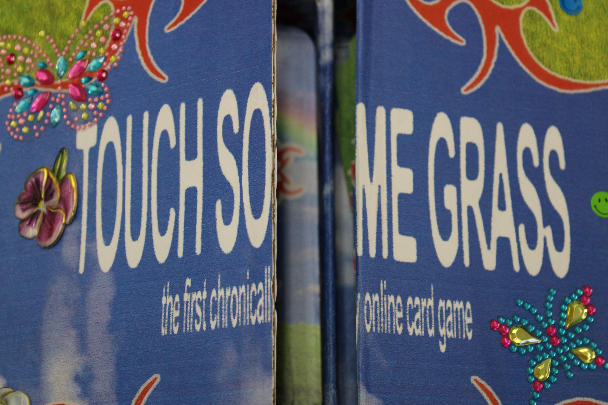

Hassam Virk's Project



Description
A quirky, 2010-inspired design, blending humor, nostalgia, and social commentary through graphic design. This project includes elements that play with visuals and text, echoing internet culture.
Categories
- Tiny Pic
- Foldable
- Time-Based Media
Stickers meant to mimick the online humor of sharing and spreading the humor.
A card game designed with bizarre and fun interactions, evoking humor and a unique visual style.
A video showcasing how it's played in an entertaining and infromative way.